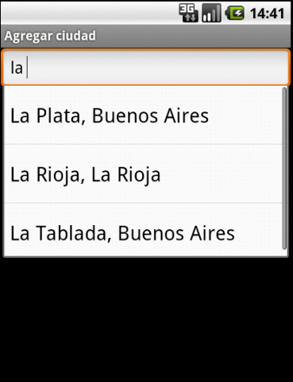
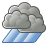
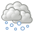
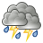
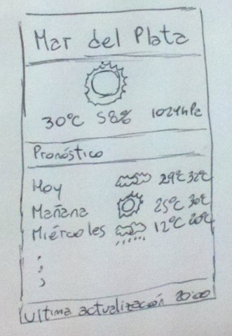

El usuario selecciona la opción del menú "Agregar Ciudad".
Se accede a la pantalla para agregar ciudad.
Título de la pantalla: Alta de ciudad
Buscador: Campo texto: "Ciudad (e.j Buenos Aires)"
Opciones:
Agregar
Back
El usuario selecciona una ciudad (ver Búsqueda / selección de ciudad).
El usuario selecciona la opción "Agregar".
Luego de agregar la ciudad, se regresa a la pantalla de visualización de información del tiempo para la nueva ciudad, la cual estará al final de la lista de ciudades agregadas.
Nota: No es posible dar de alta dos veces la misma ciudad. En caso que el usuario agregue una ciudad ya seleccionada anteriormente, la ciudad no se agrega (y se continúa con el curso normal).
Nota: En caso de intentar agregar una ciudad, si la aplicación aún no cargó la lista de ciudades disponibles y no tiene acceso a internet, emitirá un mensaje que diga: "Actualmente no existen ciudades para consultar. Intente más tarde"
Búsqueda / selección de ciudad
El sistema va autocompletando a medida que se escribe
Para hacer efectiva la selección, el usuario debe elegir una de las opciones que despliega el buscador
Nota: La búsqueda no distingue entre mayúsculas y minúsculas, ni tampoco tildes: si ingreso andalgalá o Andalgala, debería traerme la ciudad Andalgalá (con el tilde). O si ingreso bUenOs aireS, debería traerme Buenos Aires.

Ejemplo de pantalla de agregar ciudad
Pantalla de Visualización de estado del tiempo
El usuario ingresa a la aplicación.
Se accede a las pantallas con al información del tiempo, de manera secuencial, en el mismo orden que fueron dadas de alta las distintas ciudades (en el caso de ser la primera vez que se accede a la aplicación se va directamente a la pantalla de alta de ciudad).
Para cada ciudad se visualiza:
Estado actual:
Estado del Tiempo
Temperatura
Presión Atmosférica
Humedad
Pronóstico (Para el día de hoy más los proximos 3 días):
Día de la semana (se visualiza "hoy", "mañana" y el nombre de los siguientes días)
Estado del tiempo
Mínima esperada
Máxima esperada
última actualización: En el pie de la pantalla se debe visualizar información sobre la última actualización
Observaciones:
Las temperaturas se miden en grados celsius y los valores posibles van de -273 a 99.
Los posibles estados del tiempo son:
N/D
Despejado
Nublado
Parcialmente Nublado
Brumoso
Lluvias Aisladas
 Lluvioso
 Nieve
Lluvia y Nieve
 Tormentoso
Ventoso
La humedad se mide en porcentaje y va de 0 a 100 por ciento.
La presión se mide en hectopascales (hPa)
En caso de no encontrarse disponible la información, se debe visualizar la signa "N/D" (No Disponible).

Mockup de la pantalla de estado del tiempo
Actualización de Datos
Cuando el usuario acceda a la pantalla de visualización de estado del tiempo para una ciudad, la aplicación:
Si no tiene datos, mostrará N/D e intentará traerlos del servidor.
Si tiene datos, los mostrará.
Si tiene datos cuya actualización sea de hace más de 5 minutos, luego de mostrarlos, intentará actualizarlos.
Por más que haya conexión a internet disponible, hasta que el usuario no intente ver una ciudad, los datos no se actualizarán.
Opciones del menú
Agregar ciudad: Al seleccionar esta opción se dirige a la funcionalidad "Pantalla Agragar Ciudad"
Quitar ciudad: Elimina la ciudad que se está visualizando y pasa a la primer ciudad disponible. En caso de no quedar más ciudades, vuelve a la pantalla "Agregar Ciudad"
Siguiente ciudad: Muestra la siguiente ciudad seleccionada. En caso de haber llegado a la última, vuelve a empezar. En caso de haber una sola ciudad, esta opción está deshabilitada.
Mensajes de Error
En los casos en que la aplicación requiera conectarse con el servidor y no pueda hacerlo, deberá mostrar mensajes de error, indicando el motivo:
Si el dispositivo no tiene acceso a internet, ""Se produjo un error en la conexion: " y el motivo del error.
Si el dispositivo tiene acceso a internet, pero el servidor no responde correctamente: "El servidor no está disponible".